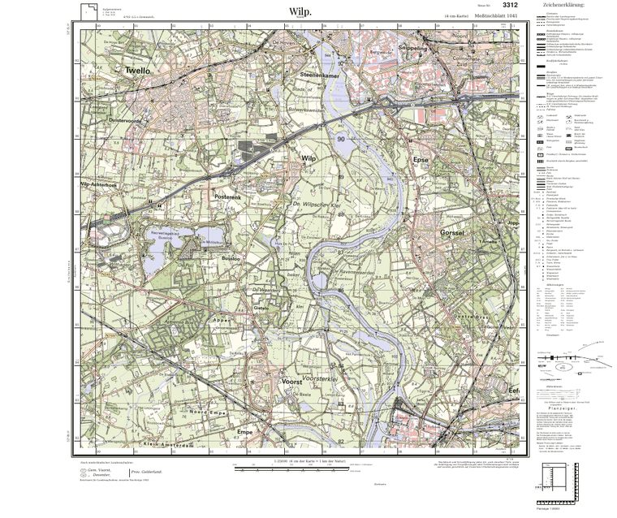

Blatt I.
Wilp
Het IJsseldal rond Wilp, met Twello, de zuidrand van Deventer, Gorssel en Voorst. Gemaakt in de stijl van een Preußisches Meßtischblatt.
- Schaal
- 1 : 25 000 (4 cm = 1 km)
- Kaartvlak
- 466 × 444 mm · 11,7 × 11,1 km
- Blad
- 654 × 549 mm
- Raster
- UTM 32U